Добро пожаловать в мир Dota 2
Изучай героев, осваивай позиции и побеждай в каждой игре.
Популярные герои
Познакомься с самыми знаковыми героями Dota 2 — от воинов до ПОТУЖНОСТИ.
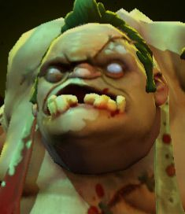
Pudge
Мясник с хуком
Сила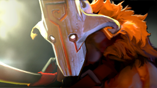
Juggernaut
Мастер клинка
Ловкость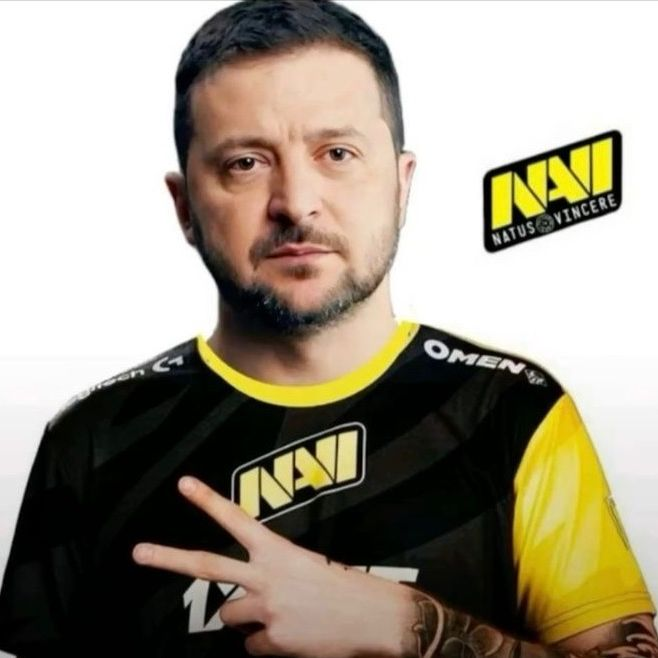
Zelensky
Мастер дронов
Универсал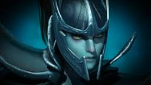
Phantom Assassin
Быстрый урон
Ловкость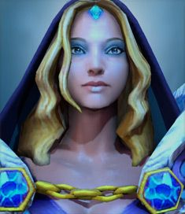
Crystal Maiden
Ледяная волшебница
Интеллект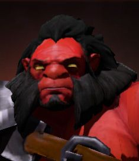
Axe
Берсерк с топором
СилаГайд по позициям
Каждый игрок в Dota 2 занимает одну из пяти позиций. Узнай, какая роль подходит именно тебе.
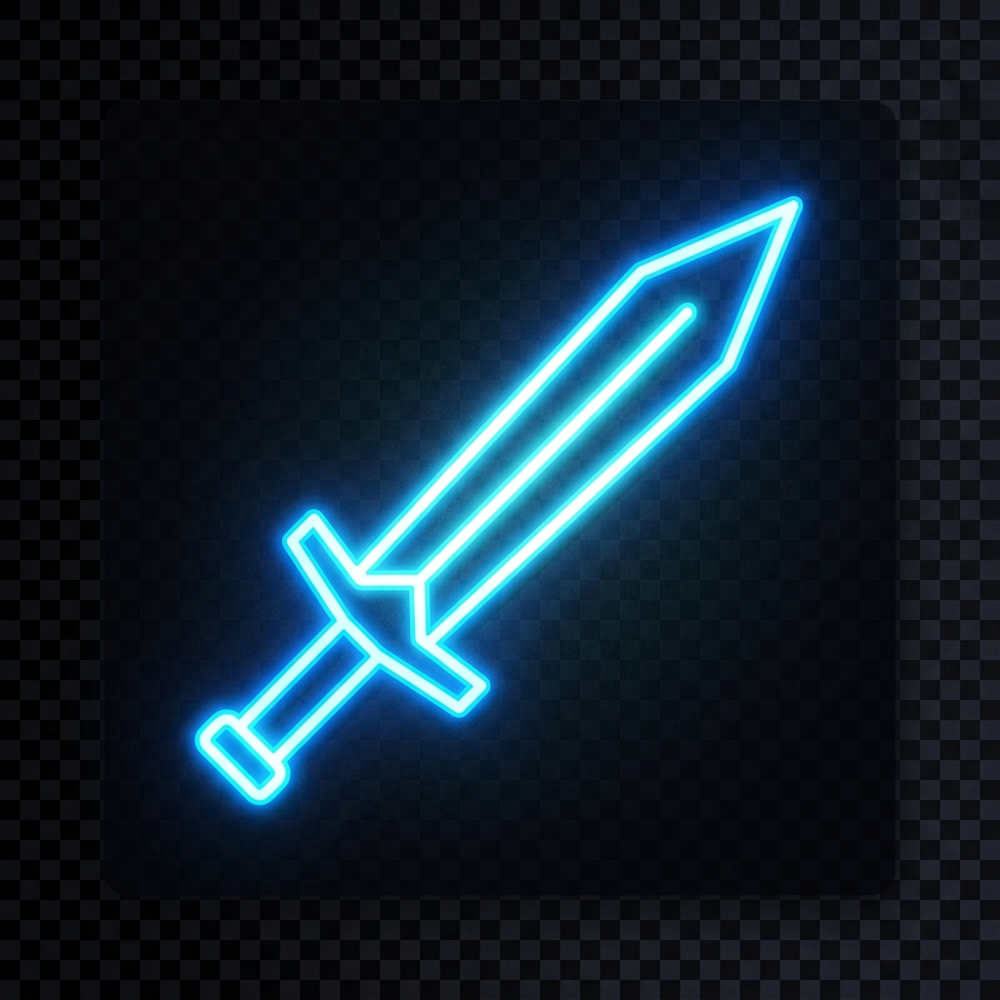
Carry (Керри)
Safelane (Нижняя для Radiant / Верхняя для Dire)Роль в команде
Главный источник урона в поздней стадии игры. Керри фармит предметы в начале матча, чтобы стать убивать всех к концу. От его фарма и решений в тимфайтах зависит исход всей игры.
Приоритет фарма
Ключевые задачи
- Эффективно фармить крипов и нейтралов в начале игры
- Собирать ключевые предметы как можно быстрее
- Наносить максимальный урон в командных сражениях
- Доводить игру до победы в лейте
- Не тупить
Советы для новичков
Практикуй ласт-хит крипов. Старайся добивать каждого крипа.
Следи за миникартой. Если вражеских героев не видно — отойди ближе к башне.
Не участвуй в ранних драках без необходимости. Твоя задача — фарм.
Изучи тайминги своего героя и играй агрессивнее, когда собрал ключевую шмотку.
Примеры героев
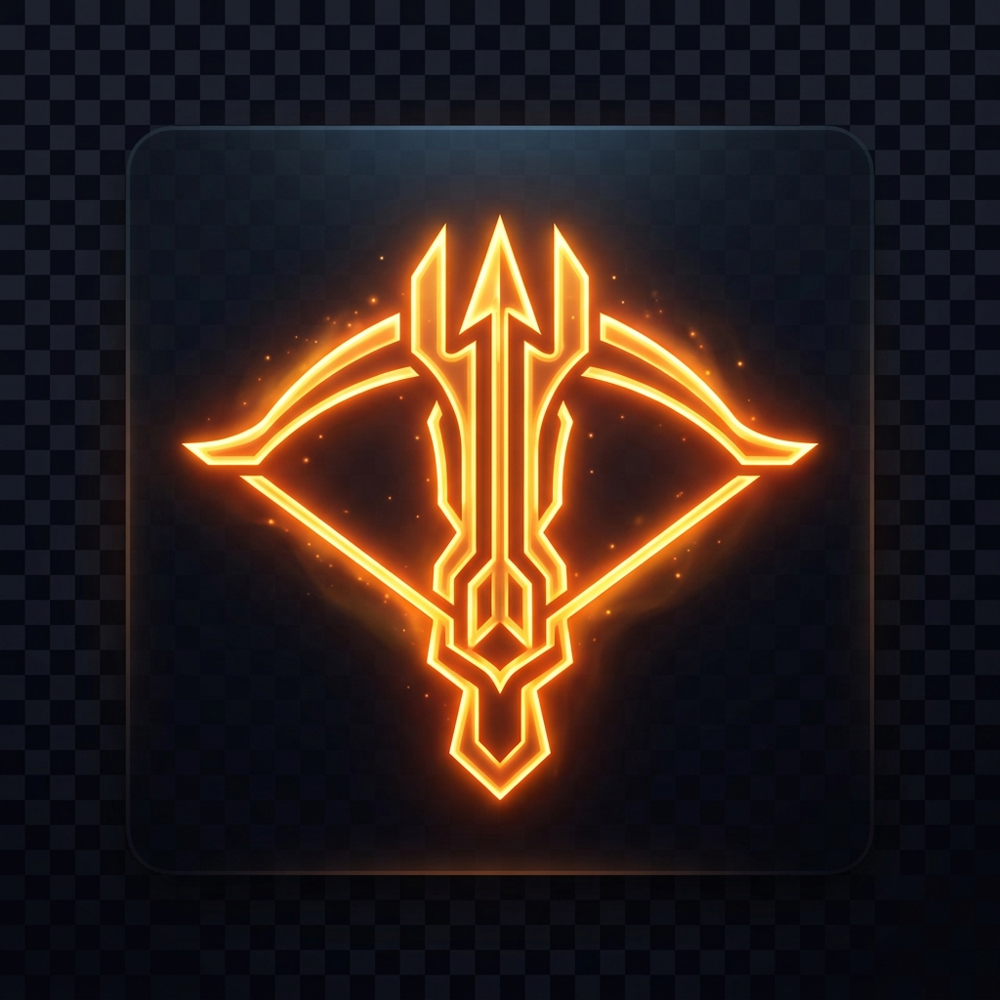
Mid (Мидер)
Midlane (Центральная линия)Роль в команде
Самый самостоятельный игрок в команде. Мидер стоит один на линии, быстро набирает опыт и уровни. Его задача — получить преимущество на лайне и делать ганки (помогать другим лайнам).
Приоритет фарма
Ключевые задачи
- Выиграть или не проиграть свою линию 1 на 1
- Быстро набирать уровни и получать ключевые способности
- Делать ганки на боковые линии после получения преимущества
- Контролировать руны и руну мудрости
Советы для новичков
Контролируй руны каждые 2 минуты — они дают огромное преимущество. На 6 минуте желатьно делать ганк под активку.
Используй высокий уровень, чтобы делать ганки на сайдлейны с 6-7 уровня.
Старайся не умирать — на миде смерть особенно болезненна из-за потери опыта.
Учись играть разных героев — мидеру нужен широкий пул.
Примеры героев
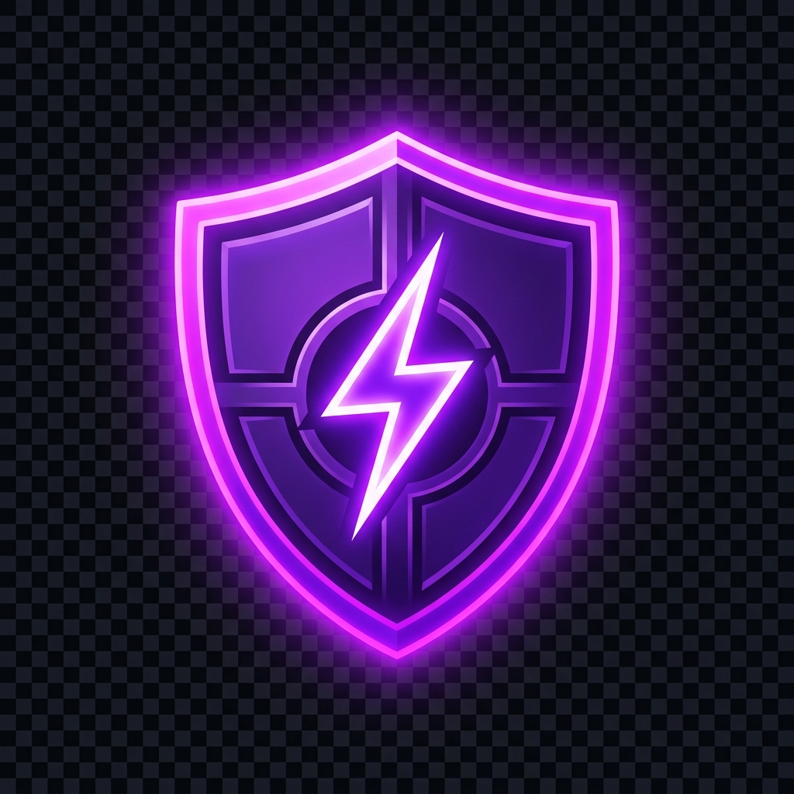
Offlane (Тройка)
Hardlane (Верхняя для Radiant / Нижняя для Dire)Роль в команде
Танк и инициатор командных сражений. Оффлейнер стоит на сложной линии, его задача — не дать вражескому керри спокойно фармить и при этом самому получить опыт и предметы для командных боёв.
Приоритет фарма
Ключевые задачи
- Мешать вражескому керри фармить на линии
- Оставаться живым и получать опыт даже в сложных условиях
- Инициировать командные сражения в мидгейме (т.
- Создавать пространство для фарма керри
Советы для новичков
Не бойся стоять на сложной линии. Опыт важнее золота для оффлейнера.
Покупай предметы на выживание: Vanguard, Hood of Defiance, Blade Mail.
После 10-й минуты начинай активно перемещаться и давить вражеские башни.
Координируй инициации с командой — не лети один в пятерых.
Примеры героев
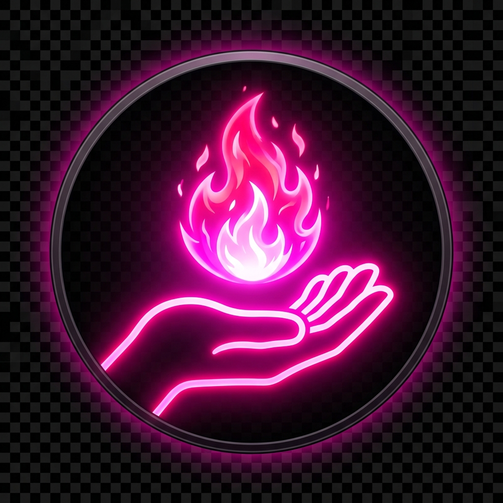
Soft Support (Роумер; Четверка)
Hardlane + RoumerРоль в команде
Активный саппорт, который помогает оффлейнеру на линии и затем роумит по карте, создавая давление на противника. Это самая динамичная позиция — ты постоянно перемещаешься, ставишь варды и делаешь ганки.
Приоритет фарма
Ключевые задачи
- Помогать оффлейнеру выигрывать линию
- Делать ганки на другие линии, особенно на мид
- Ставить варды и обеспечивать обзор карты
- Собирать полезные для команды предметы (Pipe of Insight, Force Staff)
Советы для новичков
Всегда носи с собой TP, чтобы всега быть рядом с кором и помогать ему в случае чего.
Не забывай про варды. Хороший обзор выигрывает игры.
Появляйся там, где тебя не ждут.
Не стесняйся покупать смоки (Smoke of Deceit) для ганков и поставления дерзких вардов во вражеский лес.
Примеры героев
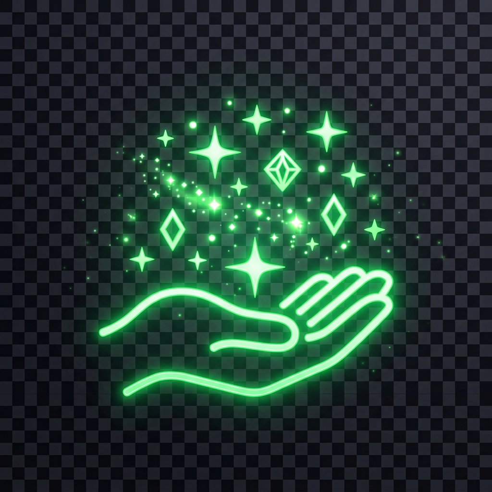
Hard Support (Пятерка)
Safelane (с Carry)Роль в команде
рд саппорт стоит с керри на сэйфлейне, обеспечивает ему комфортный фарм, лечит, защищает и обеспечивает обзор. Это самая самоотверженная позиция — ты жертвуешь своим золотом ради пГлавный защитник команды в ранней игре. Хаобеды команды.
Приоритет фарма
Ключевые задачи
- Защищать своего керри на линии от вражеского давления
- Делать отводы крипов (пулл) для контроля линии
- Покупать и расставлять варды и сентри по всей карте; дасты.
- Использовать способности для спасения союзников в тимфайтах
Советы для новичков
Научись делать отводы (пуллы) — это ключевой навык пятой позиции.
Покупай расходники для керри: танго, фласки в начале игры.
Позиционирование в тимфайтах важнее предметов. Стой сзади и спасай союзников.
Не фарми крипов, которые нужны твоему керри. Получай золото с ассистов.
Примеры героев
Об игре
Dota 2 — это легендарная командная стратегия от Valve, в которой две команды по 5 игроков сражаются за уничтожение вражеского Трона. С более чем 120 уникальными героями, каждая игра — это уникальный опыт.
Стратегическая глубина
Каждое решение имеет значение. Выбор героев, предметов и тактики определяет победителя.
Киберспорт
Dota 2 — один из крупнейших киберспортивных титулов с призовыми фондами в десятки миллионов долларов.
Free-to-Play
Игра полностью бесплатна. Все герои доступны с самого начала — никакого pay-to-win.